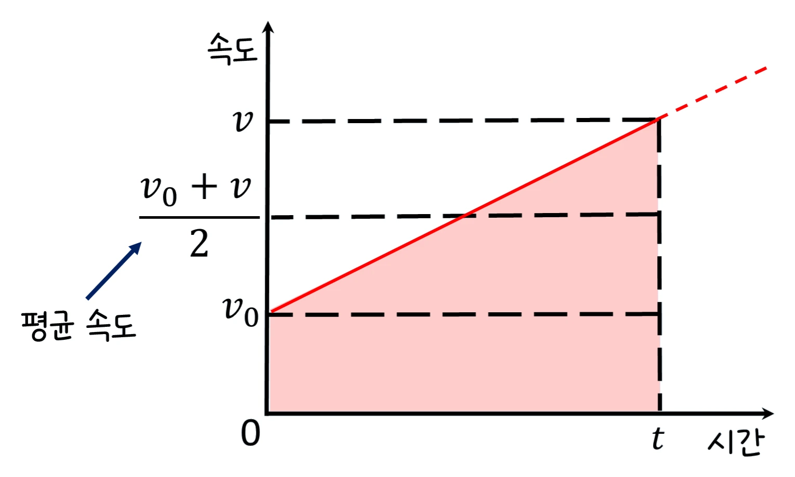

중3 과학 · 운동과 에너지 · 웹툰 3화 「그래프 속에 숨은 이야기」
실험에서 앞 4초와 뒤 4초의 속력을 다르게 정하고, 그래프의 색칠된 넓이와 수레가 실제로 간 거리를 나란히 비교했습니다. 왜 넓이가 거리가 되는지, 속력이 중간에 바뀌어도 왜 성립하는지 정리합니다.
실험 데이터 되짚기
앞 구간(0~4초) 속력 v₁, 뒤 구간(4~8초) 속력 v₂를 바꿔 가며 8초 동안 달리게 했습니다.
| v₁ / v₂ (m/s) | 6 / 2 | 9 / 3 | 4 / 4 | 10 / 0 |
|---|---|---|---|---|
| 그래프 넓이 (m) | 32 | 48 | 32 | 40 |
| 수레 이동 거리 (m) | 32 | 48 | 32 | 40 |
| 평균 속력 (m/s) | 4 | 6 | 4 | 5 |
어떤 조합이든 그래프 넓이와 수레의 이동 거리가 정확히 같았습니다. 6/2와 4/4는 속력이 달라도 넓이(거리)가 같고, 10/0은 뒤 4초를 멈춰 있어도 앞 4초의 넓이만큼 갔습니다.
이동 거리 = 속력 × 시간입니다. 속력–시간 그래프에서 속력은 세로, 시간은 가로이므로 속력 × 시간은 곧 직사각형의 넓이입니다. 단위로 따라가 보면 m/s × s = m — 넓이의 단위가 거리 단위가 됩니다.
속력이 구간마다 달라도 구간별 직사각형 넓이를 더하면 전체 이동 거리가 됩니다. 실험의 계단 모양 그래프가 바로 이 경우입니다: v₁ × 4 + v₂ × 4.
움직여 보기
그래프가 칠해지는 만큼 수레가 간다
파란 칸(앞 4초)과 초록 칸(뒤 4초)이 칠해진 만큼 수레가 갑니다. 6/2와 4/4처럼 모양이 달라도 넓이가 같으면 간 거리도 같아요. 평균 속력은 전체 거리 ÷ 8초입니다. (화면은 2배 빠르게)
평균 속력 = 전체 이동 거리 ÷ 전체 시간입니다. 6 m/s와 2 m/s로 4초씩 달리면 32 ÷ 8 = 4 m/s. 두 속력의 평균(4)과 같은 것은 두 구간의 시간이 같기 때문이고, 시간이 다르면 단순 평균이 아니라 거리 ÷ 시간으로 구해야 합니다.
실제 수레는 속력이 순간적으로 바뀌지 않고 비스듬한 선으로 이어집니다. 그 부분은 삼각형·사다리꼴 넓이로 계산합니다. 아주 좁은 직사각형을 무수히 더한다고 생각하면 어떤 모양의 그래프에서도 ‘넓이 = 거리’가 성립합니다(적분의 아이디어). 자동차 주행 기록계와 러닝 앱이 거리를 구하는 방식이 바로 이것입니다.
교재 그림
비스듬한 그래프도 넓이 = 거리

속력이 일정하게 늘면 그래프 아래는 사다리꼴(출발 속력이 0이면 삼각형)입니다. 넓이 = (처음 속력 + 나중 속력) ÷ 2 × 시간 — 가운데 점선 높이가 평균 속력이에요.
구간이 여러 개면 각 직사각형 넓이의 합 · 평균 속력 = 전체 거리 ÷ 전체 시간
“속력이 안 변하니까... 수평선이요?”
웹툰 3화 · 등속 운동의 속력–시간 그래프는 시간축과 나란한 수평선. 닥터 이안: “그리고 이 그래프 아래 ‘넓이’가 바로 이동 거리를 의미해.”
“로봇이 5 m/s로 4초 동안 움직였다면... 넓이는 20이니까 20 m 이동!”
웹툰 3화 · 가로 4, 세로 5인 직사각형의 넓이 = 20. 닥터 이안: “완벽해.”
앞 구간 넓이 5 × 3 = 15 m, 뒤 구간 넓이 1 × 5 = 5 m → 전체 20 m.
평균 속력 = 20 ÷ 8 = 2.5 m/s. 두 속력의 단순 평균 (5 + 1) ÷ 2 = 3이 아닌 이유는 두 구간의 시간이 다르기 때문입니다.
그래프는 (0, 0)에서 (4, 10)으로 올라가는 직선이고, 그 아래는 밑변 4, 높이 10인 삼각형입니다. 넓이 = ½ × 4 × 10 = 20 m. 직사각형이 아니어도 ‘넓이 = 거리’는 그대로 성립합니다. 이런 운동이 다음 화의 자유 낙하입니다.